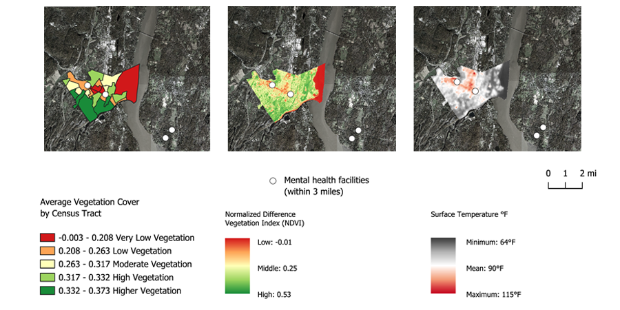
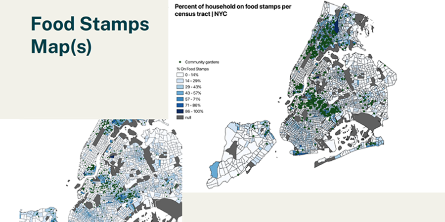
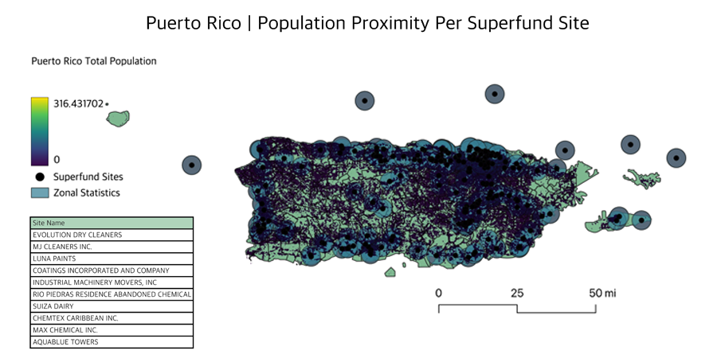
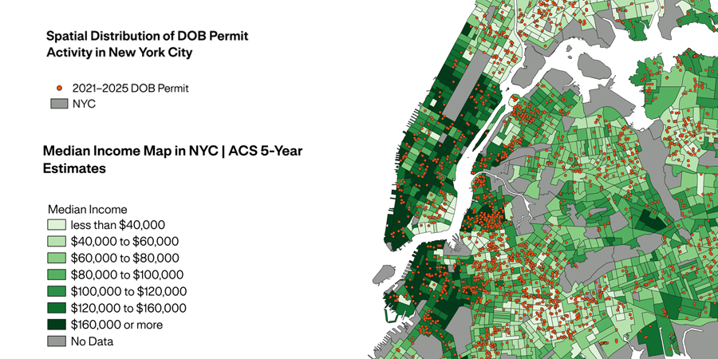
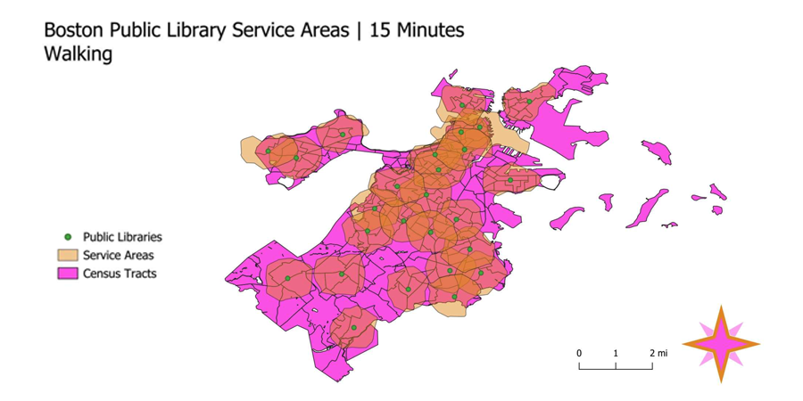
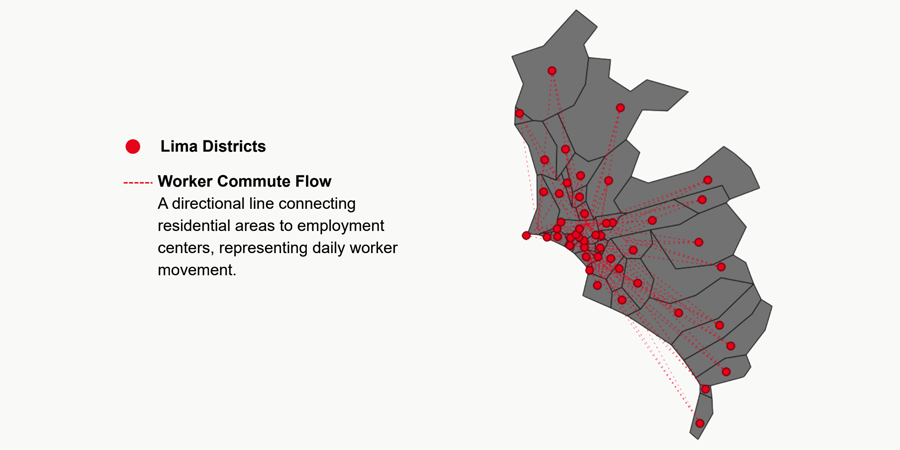

Projects - Spring 2026

This project examines how environmental conditions intersect with access to mental health infrastructure across Kingston, New York. Using Landsat-derived raster data, the analysis compares vegetation levels, surface temperature, and the spatial distribution of mental health facilities to explore how environmental stressors may compound barriers to care. In QGIS, the project processes satellite imagery to calculate NDVI as a measure of vegetation and derives land surface temperature to identify areas of urban heat exposure. These raster surfaces are then interpreted alongside census tract geographies and mapped in relation to mental health facility locations. The analysis shows a clear inverse relationship between vegetation and surface temperature: areas with lower NDVI generally experience higher surface temperatures, indicating stronger heat burden and reduced environmental quality. By overlaying mental health infrastructure, the project highlights how environmental vulnerability and healthcare access can be examined together as part of a broader environmental justice framework. While exploratory, the project effectively demonstrates how raster analysis, zonal summaries, and facility mapping can be combined to identify neighborhoods where environmental stress and mental health service needs may overlap. The work points toward future analysis that could incorporate demographic indicators, service-area buffers, and statistical comparisons between environmental conditions and access to care.

This project examines the spatial relationship between community gardens, household income, SNAP participation, and food retail access across New York City. Using ACS 2022 5-Year Estimates, NYC census tract boundaries, GreenThumb community garden data, and New York State retail food store locations, the analysis asks whether community gardens are concentrated in wealthier neighborhoods or in lower-income areas experiencing greater food insecurity. In QGIS, median household income and SNAP participation rates were joined to census tracts and mapped as choropleths, with garden locations and retail food stores overlaid to evaluate spatial patterns. The findings show that community gardens are not evenly distributed across the city; instead, they are concentrated in historically lower-income neighborhoods such as Harlem, the Lower East Side, the Bronx, and parts of Brooklyn. Many of these areas also show moderate to high rates of SNAP participation, suggesting that community gardens are closely tied to neighborhoods experiencing economic hardship and food insecurity. The project also finds that gardens do not map neatly onto conventional retail food infrastructure, indicating that they operate through a different spatial logic shaped by vacant land, grassroots organizing, and community stewardship. Overall, the project frames community gardens as part of New York City’s environmental justice landscape and as visible evidence of community-led responses to disinvestment, food insecurity, and unequal access to neighborhood resources.

This project analyzes the spatial relationship between Superfund site locations and population vulnerability across Puerto Rico. Using EPA Superfund site data, ACS-derived demographic indicators, and gridded population raster data, the study evaluates how environmental risk intersects with population exposure. In QGIS, Superfund sites are buffered using a 3-mile radius to approximate zones of potential environmental impact. These buffers are then overlaid with population data using zonal statistics to estimate the number of residents living within proximity to hazardous sites. Additional vector layers representing demographic characteristics are joined and mapped to contextualize patterns of vulnerability. The analysis finds that a significant portion of Puerto Rico’s population resides within close proximity to Superfund sites, particularly in densely populated urban areas. The results highlight how environmental risk is not evenly distributed, with certain communities experiencing higher exposure due to both geographic proximity and underlying socioeconomic conditions. By integrating buffer analysis, raster population estimation, and demographic mapping, the project demonstrates how GIS can be used to identify areas where environmental hazards and vulnerable populations overlap. The work contributes to an environmental justice perspective by emphasizing the spatial relationship between hazardous infrastructure and community exposure, while also suggesting opportunities for more targeted public health and remediation strategies.

This project examines the spatial relationship between construction activity and income distribution across New York City to better understand patterns of redevelopment and potential gentrification. Using NYC Department of Buildings permit issuance data from 2021–2025 and ACS 5-Year Estimates for median household income, the analysis maps where construction intensity is concentrated and compares those areas to neighborhood-level economic geography. In QGIS, DOB permit records were imported as point layers, filtered for relevant construction activity such as new buildings, major alterations, and demolitions, and reprojected to EPSG:2263. ACS income data were joined to census tract geometries, while permit activity was visualized at multiple spatial scales, including raw point distributions, PUMA-level aggregation, neighborhood-level aggregation, and final overlay mapping with income patterns. The project finds that construction is widespread but highly uneven, with strong concentrations in Harlem, central and western Brooklyn, western Queens, the South Bronx, and selected waterfront or transit-adjacent districts. The final overlay highlights transitional “edge zones” where intense construction activity occurs near boundaries between higher-income and lower-income neighborhoods. These patterns suggest that redevelopment pressure is spatially tied to market demand, accessibility, and neighborhood change rather than simply available space. Overall, the project uses GIS to visualize how construction activity intersects with income geography and raises important questions about gentrification, affordability, and displacement risk in New York City.

This project evaluates spatial accessibility to public libraries in Boston, focusing on how well school-aged populations are served within walking distance of library locations. Using Boston public library point data and ACS-derived demographic estimates, the analysis estimates the distribution of school-aged populations across census tracts and compares these patterns to library service coverage. In QGIS, OpenRouteService (ORS) tools are used to generate isochrone service areas representing 15-minute walking distances from each library. These service areas are then overlaid with census tract geometries, allowing for spatial selection and classification of tracts as served or underserved. The analysis finds that the majority of Boston’s school-aged population falls within these 15-minute service areas, indicating strong baseline accessibility. However, several peripheral and geographically constrained neighborhoods fall outside of these zones, highlighting localized gaps in access. By combining network-based isochrone analysis with demographic mapping, the project demonstrates how GIS can be used to evaluate public infrastructure equity at the neighborhood scale. The findings suggest that while overall coverage is high, targeted interventions may be needed in specific areas to improve equitable access to educational and community resources.

This project examines spatial disparities in public transit accessibility across Metropolitan Lima, Peru, focusing on how connectivity to major employment centers varies between central and peripheral districts. Drawing on district boundary data from INEI and transportation networks from OpenStreetMap, the analysis uses GIS to evaluate access to the Metropolitano BRT and Lima Metro systems. In QGIS, transit infrastructure layers are integrated with district polygons to assess coverage, while buffer and network-based accessibility approaches are used to approximate areas served by high-capacity transit. The project also employs thematic mapping to compare accessibility conditions across districts and develops flow line visualizations to illustrate directional commuting patterns from residential areas to employment hubs such as San Isidro and Miraflores. Results indicate a clear spatial divide: central districts benefit from dense, multimodal connectivity, while peripheral areas—including San Juan de Lurigancho, Comas, and Ate—experience limited access and longer commute paths. These patterns align with broader inequalities in access to jobs and services. While some analyses remain illustrative, the combined use of accessibility mapping and flow visualization highlights how uneven infrastructure distribution shapes daily mobility. The study underscores the importance of expanding transit investment in underserved areas to reduce commute burdens and improve equitable access to economic opportunity across the metropolitan region.